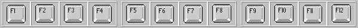

|
|
|
|
|
|
|
|
The iPC Series supports hardware function keys and keyboard function keys. The XBTGTW Series supports keyboard function keys.
|
Function Key |
Number of Supported Function Keys |
|
|
Flex PC Box with KPM Display |
Flex PC Box with Standard Display |
|
|
Target (Static) Function Keys (Fi) |
20 |
12 |
|
Panel (Dynamic) Function Keys (Ri) |
20 |
12 |
All iPC Compact and Smart Series targets and Flex PC Box with Standard Display, except for the Compact PC Box and the Smart Box, support the use of keyboard function keys. Be aware that an iPC function key can operate as a target function key and as a panel function key.
For more information on adding function keys to your project, see Section 24.5.4, Adding and Removing Function Keys.
The iPC Series and iPC Flex Series with Standard Display uses the function keys from the connected keyboard, from F1 to F15. Most standard keyboards support function keys F1 to F12.

The iPC Flex Series with KPM Display uses the F1 to F20 target function keys from the keyboard and the R1 to R20 panel function keys from the keyboard. You can configure target function keys in the target properties and panel function keys in the panel properties.
Target function keys can be used on any target screen at runtime. Panel function keys can only be used when you are in a panel at runtime and are functional until you execute the following operations:
Previous Panel
Restart Runtime
Exit Runtime
Configuration
Change Panel
Event Log
Login Panel.
All XBTGTW Series support the use of keyboard function keys. Be aware that an XBTGTW function key can operate as a Target Function Key and as a Panel Function Key. For more information on adding function keys to your project, see Section 24.5.4, Adding and Removing Function Keys.
The XBTGTW Series uses the function keys from the connected keyboard, from F1 to F15. Most standard keyboards support function keys F1 to F12.